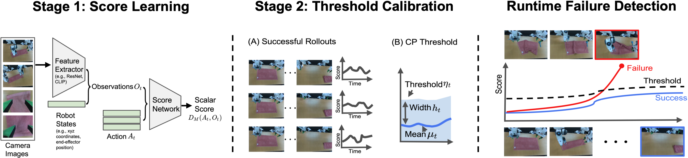
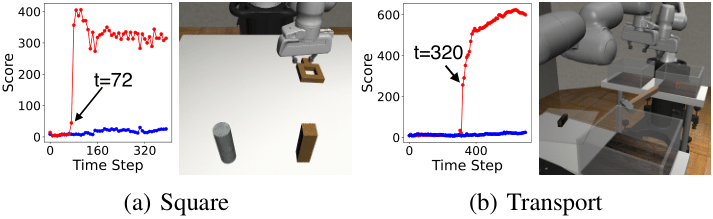

How do we detect policy failures during a rollout without a priori
knowledge of potential failures?
Our FAIL-Detect: raised alarms (red
border) when policy fails, and no raised alarms when policy succeeds
Abstract
Recent years have witnessed impressive robotic manipulation systems driven by advances in imitation learning and
generative modeling, such as diffusion- and flow-based approaches. As robot policy performance increases, so does
the complexity and time horizon of achievable tasks, inducing unexpected and diverse failure modes that
are difficult to predict a priori. To enable trustworthy policy deployment in safety-critical human environments,
reliable runtime failure detection becomes important during policy inference. However, most existing failure
detection approaches rely on prior knowledge of failure modes and require failure data during training,
which imposes a significant challenge in practicality and scalability. In response to these limitations, we
present FAIL-Detect, a modular two-stage approach for failure detection in imitation learning-based robotic
manipulation. To accurately identify failures from successful training data, we frame the problem as sequential
out-of-distribution (OOD) detection. We first distill policy inputs and outputs into scalar signals
that
correlate with policy failures and capture epistemic uncertainty. FAIL-Detect then employs conformal
prediction (CP) as a versatile framework for uncertainty quantification with statistical guarantees.
Empirically, we thoroughly investigate both learned and post-hoc scalar signal candidates on diverse robotic
manipulation tasks. Our experiments show learned signals to be mostly consistently effective, particularly when
using our novel flow-based density estimator. Furthermore, our method detects failures more
accurately and faster than
state-of-the-art (SOTA) failure detection baselines. These results highlight the potential of FAIL-Detect to
enhance the safety and reliability of imitation learning-based robotic systems as they progress toward real-world
deployment.
Methodology

We propose a two-stage approach to failure detection:
(Left - Stage I) Multi-view camera images and robot states are distilled into failure detection scalar
scores. Images passed through a feature extractor along with robot states constitute observations.
Both observations and generated future robot actions can serve as inputs to a score network. This
network outputs scalar scores that capture characteristics of successful demonstration data.
(Middle - Stage II) Scores from a calibration set of successful rollouts are then used to compute a
mean and band width to build the time-varying conformal prediction threshold.
(Right - Runtime Failure Detection) A successful trajectory (bottom) has scores that consistently
remain below the threshold. When a failure occurs (top), such as failure to fold the towel, the score spikes
above the threshold, triggering failure detection (red box).
Results
As outlined in Table 1 below, we
Propose a novel score network (logpZO).
Adapt several approaches not originally designed for failure detection.
Compare against two SOTA failure detection baselines.
Table 1: Overview of score methods evaluated in this work.
We focus on the following research questions:
How performant is failure detection without failure data?
We note that FAIL-Detect achieves high failure detection accuracy with fast detection (details in the paper):
The average best accuracy across FAIL-Detect's score candidates is ~75% in simulation and ~74% on
the robot hardware tasks.
FAIL-Detect maintains viable detection time across various score designs, with average best detection time
faster than successful trajectory completion.
What is the impact of learned vs. post-hoc scores on failure detection?
We found that learned scores (i.e., score networks are trained to minimize certain objectives) are more effective
than post-hoc scores. Specifically,
Our novel learned logpZO score within the FAIL-Detect framework is the most consistent in performance (Figures
1 and 2 above).
Post-hoc methods are often at the extremes of performance (either doing well or poorly) depending on the
particular setting (Figures 1 and 2 above).
Learned methods are more discriminative with better score separation between successful and failed
trajectories compared to post-hoc approaches (Figure 3).
Figure 3 (Robobimic - Square): Qualitative results of failure detection scores
overlaid with CP bands.
Do failure detections align with human intuition?
FAIL-Detect's alerts demonstrate strong correlation with observable failure indications in the environment
When scores exceed the decision threshold, these moments often align with meaningful changes in the physical
state of the task (Figure 4).
By examining executions within temporal windows surrounding a failure detection, one can efficiently identify
failure types for subsequent analysis.

Figure 4: Physical interpretation of logpZO, the most successful and robust learned
score method.
Supplementary Videos
BibTeX
@article{xu2025can,
title={Can We Detect Failures Without Failure Data? Uncertainty-Aware Runtime Failure Detection for Imitation Learning Policies},
author={Xu, Chen and Nguyen, Tony Khuong and Dixon, Emma and Rodriguez, Christopher and Miller, Patrick and Lee, Robert and Shah, Paarth and Ambrus, Rares and Nishimura, Haruki and Itkina, Masha},
journal={arXiv preprint arXiv:2503.08558},
year={2025}
}